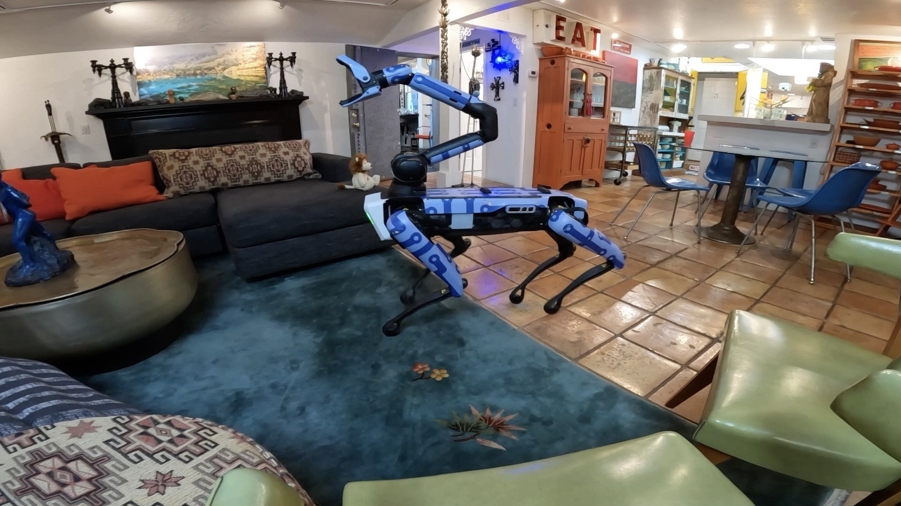
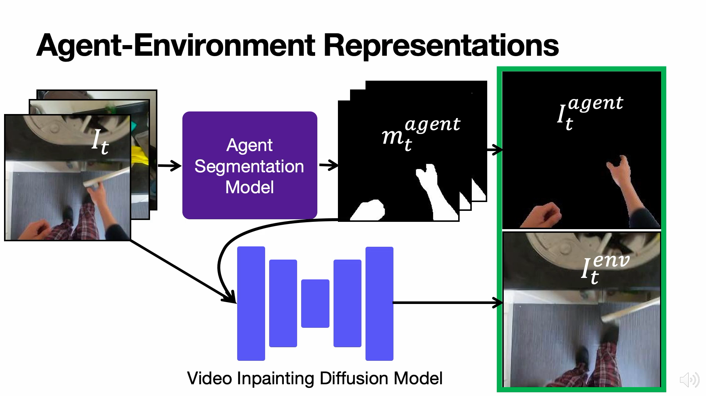
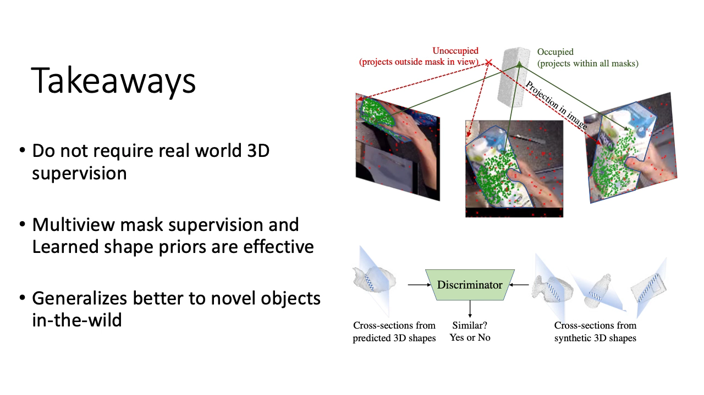
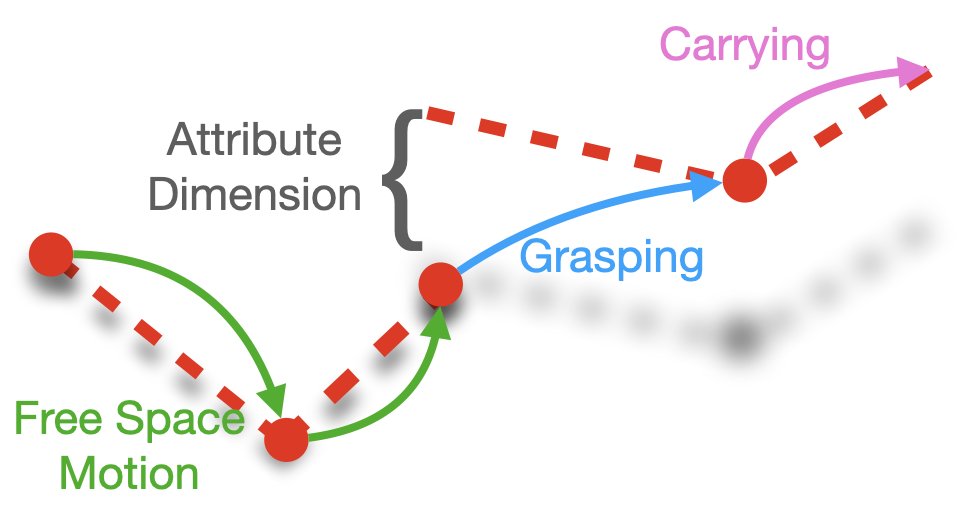
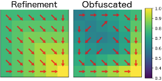
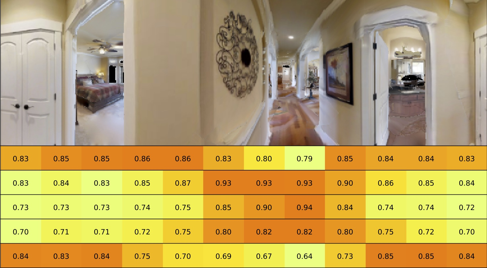

Publications
2023
|

|
GOAT: GO to Any Thing
Matthew Chang*, Theophile Gervet*, Mukul Khanna*, Sriram Yenamandra*, Dhruv Shah, Tiffany Min, Kavit Shah, Chris Paxton, Saurabh Gupta, Dhruv Batra, Roozbeh Mottaghi, Jitendra Malik*, Devendra Singh Chaplot*
In submission
abstract /
bibtex /
webpage /
paper /
video
In deployment scenarios such as homes and warehouses, mobile robots are expected to autonomously navigate for extended periods, seamlessly executing tasks articulated in terms that are intuitively understandable by human operators. We present GO To Any Thing (GOAT), a universal navigation system capable of tackling these requirements with three key features: a) Multimodal: it can tackle goals specified via category labels, target images, and language descriptions, b) Lifelong: it benefits from its past experience in the same environment, and c) Platform Agnostic: it can be quickly deployed on robots with different embodiments. GOAT is made possible through a modular system design and a continually augmented instance-aware semantic memory that keeps track of the appearance of objects from different viewpoints in addition to category-level semantics. This enables GOAT to distinguish between different instances of the same category to enable navigation to targets specified by images and language descriptions. In experimental comparisons spanning over 90 hours in 9 different homes consisting of 675 goals selected across 200+ different object instances, we find GOAT achieves an overall success rate of 83%, surpassing previous methods and ablations by 32% (absolute improvement). GOAT improves with experience in the environment, from a 60% success rate at the first goal to a 90% success after exploration. In addition, we demonstrate that GOAT can readily be applied to downstream tasks such as pick and place and social navigation.
@misc{chang2023goat,
title={GOAT: GO to Any Thing},
author={Matthew Chang and Theophile Gervet and Mukul Khanna and Sriram Yenamandra and Dhruv Shah and So Yeon Min and Kavit Shah and Chris Paxton and Saurabh Gupta and Dhruv Batra and Roozbeh Mottaghi and Jitendra Malik and Devendra Singh Chaplot},
year={2023},
eprint={2311.06430},
archivePrefix={arXiv},
primaryClass={cs.RO}
}
|
|

|
Look Ma, No Hands! Agent-Environment Factorization of Egocentric Videos
Matthew Chang, Aditya Prakash, Saurabh Gupta
NeurIPS 2023
abstract /
bibtex /
webpage /
paper /
video
The analysis and use of egocentric videos for robotic tasks is made challenging by occlusion due to the hand and the visual mismatch between the human hand and a robot end-effector. In this sense, the human hand presents a nuisance. However, often hands also provide a valuable signal, e.g. the hand pose may suggest what kind of object is being held. In this work, we propose to extract a factored representation of the scene that separates the agent (human hand) and the environment. This alleviates both occlusion and mismatch while preserving the signal, thereby easing the design of models for downstream robotics tasks. At the heart of this factorization is our proposed Video Inpainting via Diffusion Model (VIDM) that leverages both a prior on real-world images (through a large-scale pre-trained diffusion model) and the appearance of the object in earlier frames of the video (through attention). Our experiments demonstrate the effectiveness of VIDM at improving inpainting quality on egocentric videos and the power of our factored representation for numerous tasks: object detection, 3D reconstruction of manipulated objects, and learning of reward functions, policies, and affordances from videos.
@inproceedings{chang2023look,
title={Look Ma, No Hands! Agent-Environment Factorization of Egocentric Videos},
author={Matthew Chang and Aditya Prakash and Saurabh Gupta},
year={2023},
booktitle={NeurIPS}},
}
|
|

|
Learning Hand-Held Object Reconstruction from In-The-Wild Videos
Aditya Prakash, Matthew Chang, Matthew Jin, Saurabh Gupta
Pre-Print, 2023
abstract /
bibtex /
webpage /
paper /
video
Prior works for reconstructing hand-held objects from a single image rely on direct 3D shape supervision which is challenging to gather in real world at scale. Consequently, these approaches do not generalize well when presented with novel objects in in-the-wild settings. While 3D supervision is a major bottleneck, there is an abundance of in-the-wild raw video data showing hand-object interactions. In this paper, we automatically extract 3D supervision (via multiview 2D supervision) from such raw video data to scale up the learning of models for hand-held object reconstruction. This requires tackling two key challenges: unknown camera pose and occlusion. For the former, we use hand pose (predicted from existing techniques, e.g. FrankMocap) as a proxy for object pose. For the latter, we learn data-driven 3D shape priors using synthetic objects from the ObMan dataset. We use these indirect 3D cues to train occupancy networks that predict the 3D shape of objects from a single RGB image. Our experiments on the MOW and HO3D datasets show the effectiveness of these supervisory signals at predicting the 3D shape for real-world hand-held objects without any direct real-world 3D supervision.
@article{Prakash2023ARXIV,
author = {Prakash, Aditya and Chang, Matthew and Jin, Matthew and Gupta, Saurabh},
title = {Learning Hand-Held Object Reconstruction from In-The-Wild Videos},
journal = {arXiv},
volume = {2305.03036},
year = {2023}
}
|
2022
|

|
One-shot Visual Imitation via Attributed Waypoints and Demonstration Augmentation
Matthew Chang, Saurabh Gupta
ICRA 2023
Deep Reinforcement Learning Workshop NeurIPS 2022
abstract /
bibtex /
webpage /
paper /
video
In this paper, we analyze the behavior of existing techniques and design new solutions for the problem of one-shot visual imitation. In this setting, an agent must solve a novel instance of a novel task given just a single visual demonstration. Our analysis reveals that current methods fall short because of three errors: the DAgger problem arising from purely offline training, last centimeter errors in interacting with objects, and mis-fitting to the task context rather than to the actual task. This motivates the design of our modular approach where we a) separate out task inference (what to do) from task execution (how to do it), and b) develop data augmentation and generation techniques to mitigate mis-fitting. The former allows us to leverage hand-crafted motor primitives for task execution which side-steps the DAgger problem and last centimeter errors, while the latter gets the model to focus on the task rather than the task context. Our model gets 100% and 48% success rates on two recent benchmarks, improving upon the current state-of-the-art by absolute 90% and 20% respectively.
@inproceedings{chang2023oneshot,
title={One-shot Visual Imitation via Attributed Waypoints and Demonstration Augmentation},
author={Chang, Matthew and Gupta, Saurabh},
booktitle={International Conference on Robotics and Automation},
year={2023}
}
|
2021
|

|
Learning Value Functions from Undirected State-only Experience
Matthew Chang, Arjun Gupta, Saurabh Gupta
International Conference on Learning Representations (ICLR) 2022
Embodied AI Workshop CVPR 2022
Workshop on Offline Reinforcement Learning NeurIPS 2021
Deep Reinforcement Learning Workshop NeurIPS 2021
abstract / bibtex / webpage / paper / video
This paper tackles the problem of learning value functions from undirected state-only experience (state transitions without action labels i.e. (s,s',r) tuples). We first theoretically characterize the applicability of Q-learning in this setting. We show that tabular Q-learning in discrete Markov decision processes (MDPs) learns the same value function under any arbitrary refinement of the action space. This theoretical result motivates the design of Latent Action Q-learning or LAQ, an offline RL method that can learn effective value functions from state-only experience. Latent Action Q-learning (LAQ) learns value functions using Q-learning on discrete latent actions obtained through a latent-variable future prediction model. We show that LAQ can recover value functions that have high correlation with value functions learned using ground truth actions. Value functions learned using LAQ lead to sample efficient acquisition of goal-directed behavior, can be used with domain-specific low-level controllers, and facilitate transfer across embodiments. Our experiments in 5 environments ranging from 2D grid world to 3D visual navigation in realistic environments demonstrate the benefits of LAQ over simpler alternatives, imitation learning oracles, and competing methods.
@inproceedings{chang2022learning,
author = "Chang, Matthew and Gupta, Arjun and Gupta, Saurabh",
title = "Learning Value Functions from Undirected State-only Experience",
booktitle = "International Conference on Learning Representations",
year = "2022"
}
|
2020
|

|
Semantic Visual Navigation by Watching YouTube Videos
Matthew Chang, Arjun Gupta, Saurabh Gupta
Neural Information Processing Systems (NeurIPS) 2020
abstract / bibtex / webpage / paper / video
Semantic cues and statistical regularities in real-world environment layouts can improve efficiency for navigation in novel environments. This paper learns and leverages such semantic cues for navigating to objects of interest in novel environments, by simply watching YouTube videos. This is challenging because YouTube videos do not come with labels for actions or goals, and may not even showcase optimal behavior. Our method tackles these challenges through the use of Q-learning on pseudo-labeled transition quadruples (image, action, next image, reward). We show that such off-policy Q-learning from passive data is able to learn meaningful semantic cues for navigation. These cues, when used in a hierarchical navigation policy, lead to improved efficiency at the ObjectGoal task in visually realistic simulations. We observe a relative improvement of 15-83% over end-to-end RL, behavior cloning, and classical methods, while using minimal direct interaction.
@inproceedings{chang2020semantic,
author = "Chang, Matthew and Gupta, Arjun and Gupta, Saurabh",
title = "Semantic Visual Navigation by Watching YouTube Videos",
booktitle = "Advances in Neural Information Processing Systems",
year = "2020"
}
|
|